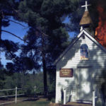
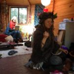
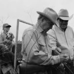
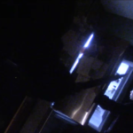

The 2016 Official Selections
2016 Flyway Film Festival Alma Kickoff
Join us for Flyway Film Festival – Alma Party!
Graciously hosted by DANZINGER VINEYARDS. The event is FREE (w/cash bar). Appetizers and desserts will be served. Live Music. Guest speakers. Prize drawings. Short film screenings. Rain or Shine…come experience the hospitality and breathtaking views from high atop the Mississippi river valley.
Danzinger Vineyards
S2015 Grapeview Ln, Alma, Wisconsin 54610
...
2016 Flyway Film Festival Kickoff Gala
The 2016 Festival opens on Wednesday, October 19th with the annual Kickoff Gala at the Villa Bellezza Winery in Pepin. Featuring food, libations, music, a keynote address, and the Festival awards ceremony, the Gala is a must-attend event for independent film aficionados and industry professionals alike. Join the Lake Pepin “glitterati” as we roll out the red carpet for our film friends from across the globe!
Get into the Flyway spirit at the Festival Kickoff Gala! Tickets are $40 online or a...
A Lesson In Comfortable Silence
 Why does silence become prickly and consumptive in daily interactions?
Screens as a part of the Student Shorts block.
...
Why does silence become prickly and consumptive in daily interactions?
Screens as a part of the Student Shorts block.
... adamas
After the death of her husband, Esther, a 22-year-old Hmong American woman, struggles to be unconquered by the plagues of loss and grief. Though Esther remains weary with sorrow, her family continually seeks to help her find a strengthening revelation.
Screens as a part of the Student Shorts block.
...
After The Storm
 Dwelling on his past glory as a prize-winning author, Ryota (Hiroshi Abe) wastes the money he makes as a private detective on gambling and can barely pay child support. After the death of his father, his aging mother (Kirin Kiki) and beautiful ex-wife (Yoko Make) seem to be moving on with their lives. Renewing contact with his initially distrusting family, Ryota struggles to take back control of his existence and to find a lasting place in the life of his young son (Taiyo Yoshizawa) – unti...
Dwelling on his past glory as a prize-winning author, Ryota (Hiroshi Abe) wastes the money he makes as a private detective on gambling and can barely pay child support. After the death of his father, his aging mother (Kirin Kiki) and beautiful ex-wife (Yoko Make) seem to be moving on with their lives. Renewing contact with his initially distrusting family, Ryota struggles to take back control of his existence and to find a lasting place in the life of his young son (Taiyo Yoshizawa) – unti... American Fable
AMERICAN FABLE is a fairy-tale thriller set in the 1980s Midwest farm crisis about a courageous girl living in a dark and sometimes magical world. When 11-year-old Gitty discovers that her beloved father is hiding a wealthy man in her family’s silo in order to save their struggling farm, she befriends the captive in secret and is forced to choose between saving the man’s life and protecting her family from the consequences of their actions.
...
Bear With Us
Bear with Us is a modern farce about a guy who attempts to propose to his girlfriend in the most romantic way possible, but his plan starts to fall apart when a ravenous bear stumbles upon their charming cabin in the woods. It’s a total comedy of errors that takes a close look at just how far we’ll go to preserve our relationships.
...
Church of Felons
 The captivating true story of addiction, loss, and redemption. Four multi-offense felons attempt to dig out from rock bottom after a life of addiction and crime. It’s the story of a furious, fed-up, unforgiving judicial system, and a church in the middle of a cornfield at the center of it all. Would you want a second chance? This film questions our perception of addiction and crime in America. With twists at the end you’ll never expect, you may soon begin questioning what you believe...
Dark Night
Dark Night enigmatically unfolds over the course of a lazy summer day, as it traces the events leading up to a mass shooting in a suburban multiplex. Abandoning the narrative confines of the true crime genre, the story is told through fragmented moments from the lives of several characters, whose fates are tragically intertwined. As the sky grows darker, the placid surface of daily life becomes disturbed by a lurking and inevitable horror. –Sundance Film Festival
‘Dark Night’ is a gorg...
Documentary Shorts
All The President’s Heads
USA | 2016 | 9 minutes
Directed By Adam Roffman
One man’s quest to save the Presidents of the United States.
We Are Made of Bone
USA | 2016 | 20 minutes
Directed By Olivia Ebertz
We are Made of Bone is a documentary look at Mexican immigrant life and the fast-growing subculture that venerates the folk saint Santa Muerte (The Holy Dead). The film is a colorful celebration of this thriving transplant community in Queens, and a religion in which devotion takes the ...
Donald Cried
With sudden passing of his grandmother, Peter Latang returns to his hometown and encounters his long lost, childhood friend, Donald Treebeck. What begins as a simple favor, turns into a long day’s journey into the past.
“A painful nostalgia trip that’s also terribly funny. It’s set to unveil a new comedic talent both behind the camera and in front of it. Donald Cried suggests the shadings of a psychological thriller stuffed into the mold of a boisterous R-rated comedy. &#...
Elf Help
 A struggling couple sees an eccentric relationship counselor to help them break up.
Screens as a part of the Friday Night Shorts Block
...
Friday Night Shorts
Spunkle
USA | 2016 | 13 minutes
Directed By Lisa Donato
A brother contemplates fatherhood when his older sister and her free-spirited wife ask him to be their sperm donor.
ONERE
USA | 2016 | 9 minutes
Directed By Kevin Pontuti
A young woman bears a strange burden.
Great White Storm
USA | 2016 | 13 Minutes
Directed By Jon Thomas
A man (Peter Christian Hansen) and his young son (Noah Deets) cross a dangerous white wasteland to obtain fire, a once plentiful resource. When our father succumbs to the...
Girl Asleep
The world is closing in on Greta Driscoll. On the cusp of turning fifteen she can’t bear to leave her childhood, it contains all the things that give her comfort in this incomprehensible new world. She floats in a bubble of loserdom with her only friend Elliott, until her parents throw her a surprise 15th birthday party and she’s flung into a parallel place; a world that’s weirdly erotic, a little bit violent and thoroughly ludicrous – only there can she find herself
...
Great White Storm
A man (Peter Christian Hansen) and his young son (Noah Deets) cross a dangerous white wasteland to obtain fire, a once plentiful resource. When the father succumbs to the elements, his son must collect the fire and work feverishly to breathe the fire and their world back to life.
Screens as part of the Friday Night Shorts block.
...
How To Build A Time Machine
From filmmaking to physics, controlling mortality has long been a creative and scientific pursuit. Fixated on the possibility of conquering time, two men find inspiration by bringing facets of H.G. Wells’ 1895 novel The Time Machine to life. Animator Rob Niosi has devoted years to obsessively replicating the time machine prop from the 1960 feature film adaptation. Meanwhile, theoretical physicist Ron Mallett has dedicated his lifetime of research to better understanding black holes and the...
Lavoyger
 El Tule ranch is a private playground for Texas oil barons and powerful politicians like the Bush family. But the manager, Lavoyger Durham, has discovered over 20 bodies of people avoiding a nearby border patrol checkpoint.
Screens as part of the Documentary Shorts block.
...
Midnight Snack
 Little Billy Wakes up in the middle of the night hungry. As he walks toward his fridge he finds a murderer following him.
Screens as a part of the Student Shorts block.
...
Phantom Boy
 A super-powered boy helps a wheelchair-bound policeman in his attempt to bring down a mob kingpin.
Children’s film.
...
A super-powered boy helps a wheelchair-bound policeman in his attempt to bring down a mob kingpin.
Children’s film.
... Political Animals
Political Animals tells the story of the civil rights struggle of this century – the gay rights movement – through the eyes of four elected women – a group often left out of gay histories until now. Emotionally charged like its subjects, the film follows four ground- breaking lesbians who took the fight for the causes most personal to them and their communities off the streets and into the halls of government.
...
Radiofrequency Ablation
 The heart-shaped news team reports on the heart operation of the animator of this film. Catheters are sent up to the heart to roast the heart tissue to correct an arrhythmia problem, and the news team puts you there to see it as it happens.
Screens as a part of the Friday Night Shorts block.
...
The heart-shaped news team reports on the heart operation of the animator of this film. Catheters are sent up to the heart to roast the heart tissue to correct an arrhythmia problem, and the news team puts you there to see it as it happens.
Screens as a part of the Friday Night Shorts block.
... Rain The Color Blue With A Little Red In It
Akounak tells the universal story of a musician trying to make it “against all odds,” set against the backdrop of the raucous subculture of Tuareg guitar. The protagonist, real life musician Mdou Moctar, must battle fierce competition from jealous musicians, overcome family conflicts, endure the trials of love, and overcome his biggest rival – himself. Stylistically borrowing from the Western rock-u-drama and an homage to Prince’s 1984 “Purple Rain,” the story was written with an...
Student Shorts
The Bel Air Motel
USA | 2016 | 3 Minutes
Directed By Mira Lippold-Johnson
A five star review of a budget motel in Austin, TX
White Doe
USA | 2016 | 11 minutes
Directed By Louie Fisher
A family’s dark past is drawn to light when a man’s obsession gets him arrested, and his estranged daughter must bail him out of jail.
Frame of Mine
USA | 2015 | 12 minutes
Directed By Matthew Simonis
Frame of Mine is a Horror/Suspense film about a naive man who develops an unconventional and unnerving ...
The Legend of Swee’ Pea
That Lloyd “Swee’ Pea” Daniels became an NBA player was no surprise — at age 16 he was named ‘the next Magic Johnson” and possibly the best player that had ever lived. That his NBA debut happened at age 25, with bullets still lodged in his chest and a body ravaged by years of crack-cocaine addiction, was a miracle. The Legend of Swee’ Pea tells the story of a dramatic basketball odyssey in which the hero must ultimately confront a life imperfectly lived....
The Letter E
 A short musical comedy about love, meaninglessness, and a 14-year-old girl named Eleanor who loves the letter E.
...
A short musical comedy about love, meaninglessness, and a 14-year-old girl named Eleanor who loves the letter E.
... The Nine
There is nothing left of the American dream on the Nine — a solemn destination, a resting place for those who have relinquished the dream. Modesto is a city that lies in California’s Central Valley, a region devastated during America’s Great Depression. Modesto’s notorious South Ninth Street – the Nine – is a no man’s land where the rules of polite society do not apply. The people living along the Nine form a ravaged micro community whose Darwinian exis...
We Are Made Of Bone
A documentary look at Mexican immigrant life and the fast-growing subculture that venerates the folk saint Santa Muerte (The Holy Dead). The film is a colorful celebration of this thriving transplant community in Queens, and a religion in which devotion takes the form of parties, late-night worship sessions and a reverence for death.
Screens as part of the Documentary Shorts.
...